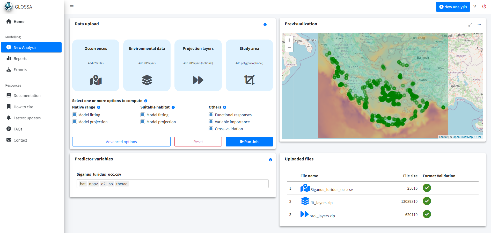
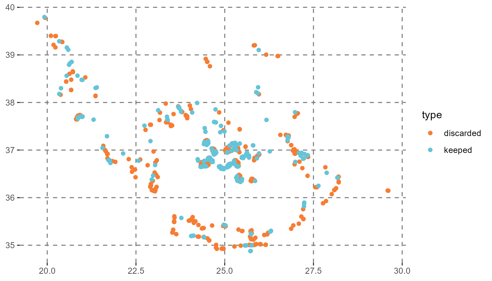
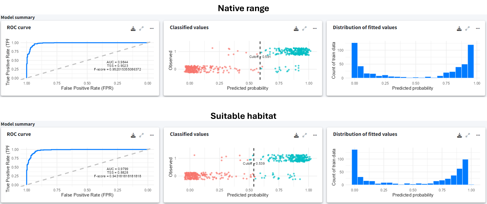
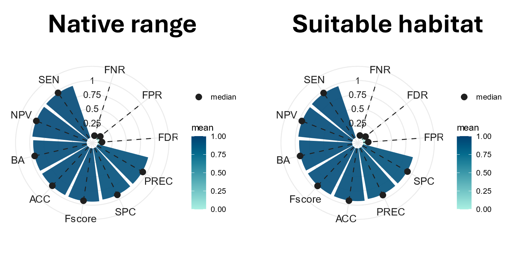
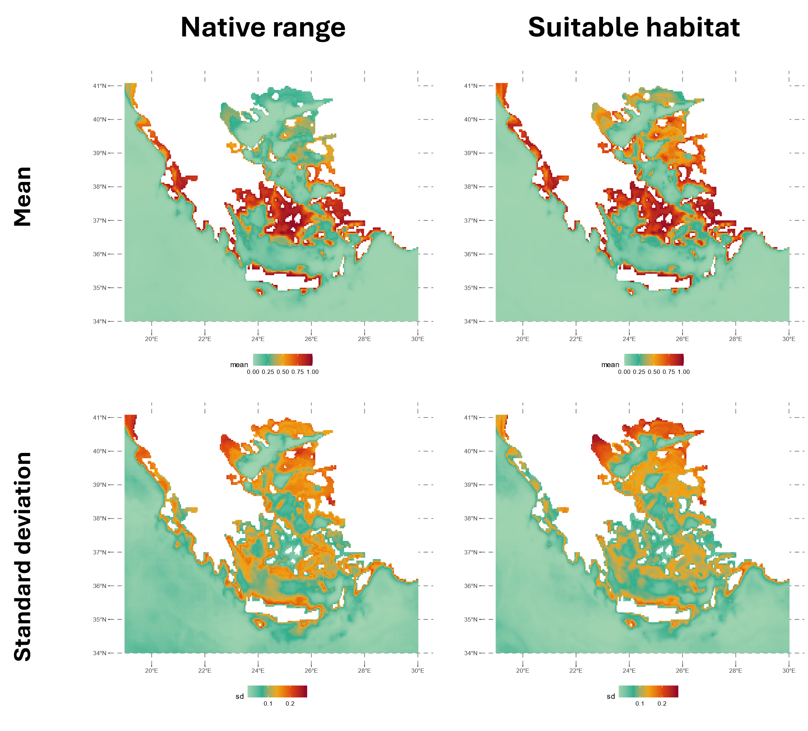
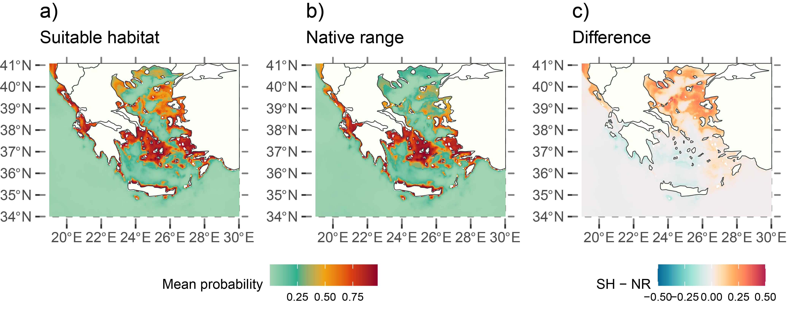

library(glossa)
library(terra)
library(sf)
library(dplyr)Example 3
Potential risk areas of Siganus luridus in the Greek Seas
This example shows how to use GLOSSA to predict the suitable habitat of Siganus luridus in the Greek Seas and identify potential areas at risk of invasion.
Introduction
This example shows how to use GLOSSA to predict the suitable habitat of Siganus luridus in the Greek Seas and identify potential areas at risk of invasion. We achieve this by comparing the species’ native range with its projected suitable habitat. Occurrence data (2000-2020) is obtained from the GreekMarineICAS geodataset, created under the ALAS: Aliens in the Aegean – A Sea Under Siege project (https://alas.edu.gr/). Environmental data is obtained from the EU Copernicus Marine Environment Monitoring Service (https://marine.copernicus.eu/).
We start by loading the required R packages.
Data preparation
Download occurrence data
We download occurrence data for Siganus luridus from the MedOBIS node, specifically from the GreekMarineICAS geodataset, part of the ALAS project. The dataset is available here (Sini et al, 2024).
After downloading and unzipping the data, we filter it to retain records of Siganus luridus from 2000 to 2020, aligning with the environmental data’s timeframe. Since all records are presences, we set the pa column to 1. We then format the data, saving it as a tab-separated file with decimalLongitude, decimalLatitude, timestamp, and pa columns.
# Unzip and read the data
tmpdir <- tempdir()
zip_contents <- utils::unzip("data/dwca-greekmarineicas_geodataset-v2.0.zip",
unzip = getOption("unzip"), exdir = tmpdir)
luridus <- list.files(tmpdir, pattern = "\\.txt$", full.names = TRUE)
luridus <- read.csv2(luridus, header = TRUE, sep = "\t")
# Filter data for *Siganus luridus*
luridus <- luridus[luridus$scientificName == "Siganus luridus", ]
# Select and rename columns of interest
luridus <- luridus[, c("decimalLongitude", "decimalLatitude",
"eventDate", "occurrenceStatus")]
luridus$eventDate <- as.numeric(sapply(strsplit(luridus$eventDate, "/|-"),
function(x) x[[1]]))
# Filter data by event date to match COPERNICUS layers (2000-2020)
luridus <- luridus[luridus$eventDate >= 2000 & luridus$eventDate <= 2020, ]
# Convert occurrence status to binary presence/absence
table(luridus$occurrenceStatus)
luridus$occurrenceStatus <- 1
colnames(luridus) <- c("decimalLongitude", "decimalLatitude", "timestamp", "pa")
# Remove incomplete occurrences
luridus <- luridus[complete.cases(luridus), ]
# Save cleaned data to file
write.table(luridus, file = "data/Siganus_luridus_occ.csv", sep = "\t",
dec = ".", quote = FALSE)Download environmental data
We download environmental data from the Copernicus Marine Service using their Python API. The data includes sea water temperature (thetao) and salinity (so) from the Mediterranean Sea Physics Reanalysis, and primary production (nppv) and dissolved oxygen (o2) from the Mediterranean Sea Biogeochemistry Reanalysis product. The data is downloaded yearly (2000-2020) at a grid resolution of 1/24 degrees for a depth range of 2 to 40 meters, which corresponds to the species’ preferred habitat, as described in FishBase (Gothel, 1992).
import copernicusmarine
# Download temperature data version "202211"
copernicusmarine.subset(
dataset_id="cmems_mod_med_phy-tem_my_4.2km_P1Y-m",
variables=["thetao"],
minimum_longitude=19,
maximum_longitude=30,
minimum_latitude=34,
maximum_latitude=41.1,
start_datetime="2000-01-01T00:00:00",
end_datetime="2020-12-31T23:59:00",
minimum_depth=2,
maximum_depth=40,
)
# Download salinity data version "202211"
copernicusmarine.subset(
dataset_id="cmems_mod_med_phy-sal_my_4.2km_P1Y-m",
variables=["so"],
minimum_longitude=19,
maximum_longitude=30,
minimum_latitude=34,
maximum_latitude=41.1,
start_datetime="2000-01-01T00:00:00",
end_datetime="2020-12-31T23:59:00",
minimum_depth=2,
maximum_depth=40,
)
# Download biogeochemical data version "202211"
copernicusmarine.subset(
dataset_id="cmems_mod_med_bgc-bio_my_4.2km_P1Y-m",
variables=["nppv", "o2"],
minimum_longitude=19,
maximum_longitude=30,
minimum_latitude=34,
maximum_latitude=41.1,
start_datetime="2000-01-01T00:00:00",
end_datetime="2020-12-31T23:59:00",
minimum_depth=2,
maximum_depth=40,
)Once the data is downloaded, we compute the mean values of the environmental variables within the specified depth range. Apart from the dynamic variables, we also include the bathymetry as a static variable. We obtained the bathymetry from the ETOPO Global Relief Model, which can be downloaded from here. We downloaded the bedrock elevation netCDF version ETOPO 2022 with a 60 arc-second resolution.
# Load biogeochemical variables
biogeochem_variables <- terra::rast("data/cmems_mod_med_bgc-bio_my_4.2km_P1Y-m_nppv-o2_19.00E-30.00E_34.02N-41.06N_3.17-37.85m_2000-01-01-2020-01-01.nc")
# Extract and process layer names
layer_names <- names(biogeochem_variables)
layer_names <- strsplit(layer_names, "_")
layer_names <- do.call(rbind, layer_names)
layer_names <- as.data.frame(layer_names)
colnames(layer_names) <- c("variable", "depth", "year")
# Compute mean values for each year across depths
env_data_year <- list("nppv" = list(), "o2" = list(), "thetao" = list(), "so" = list())
for (variable in unique(layer_names$variable)){
for (year in unique(layer_names$year)){
indices <- which(layer_names$variable == variable & layer_names$year == year)
print(paste(variable, year))
mean_water_column <- terra::mean(biogeochem_variables[[indices]], na.rm = TRUE)
env_data_year[[variable]][[year]] <- mean_water_column
}
}
# Load physical variables
physical_variables <- c(
terra::rast("data/cmems_mod_med_phy-tem_my_4.2km_P1Y-m_thetao_19.00E-30.00E_34.02N-41.06N_3.17-37.85m_2000-01-01-2020-01-01.nc"),
terra::rast("data/cmems_mod_med_phy-sal_my_4.2km_P1Y-m_so_19.00E-30.00E_34.02N-41.06N_3.17-37.85m_2000-01-01-2020-01-01.nc")
)
# Process physical variables
layer_names <- names(physical_variables)
layer_names <- strsplit(layer_names, "_")
layer_names <- do.call(rbind, layer_names)
layer_names <- as.data.frame(layer_names)
colnames(layer_names) <- c("variable", "depth", "year")
# Mean between different depths
for (variable in unique(layer_names$variable)){
for (year in unique(layer_names$year)){
indices <- which(layer_names$variable == variable & layer_names$year == year)
print(paste(variable, year))
mean_water_column <- terra::mean(physical_variables[[indices]], na.rm = TRUE)
env_data_year[[variable]][[year]] <- mean_water_column
}
}
# Load and process bathymetry data
bat <- terra::rast("data/ETOPO_2022_v1_60s_N90W180_bed.nc")
bat <- -1*bat
bat <- terra::aggregate(bat, fact = 5, fun = "mean")
r <- terra::rast(terra::ext(env_data_year[[1]][[1]]),
res = terra::res(env_data_year[[1]][[1]]))
bat <- terra::resample(bat, r)
for (i in seq_len(length(env_data_year[[1]]))){
env_data_year[["bat"]][[i]] <- bat
}
# Save processed layers to files
dir.create("data/fit_layers")
dir.create("data/fit_layers/bat")
dir.create("data/fit_layers/thetao")
dir.create("data/fit_layers/so")
dir.create("data/fit_layers/nppv")
dir.create("data/fit_layers/o2")
for (i in seq_len(length(env_data_year[[1]]))){
for (j in names(env_data_year)){
terra::writeRaster(
env_data_year[[j]][[i]],
filename = paste0("data/fit_layers/", j ,"/", j, "_", i, ".tif")
)
}
}
# Compress the layers into a zip file
zip(zipfile = "data/fit_layers.zip", files = "data/fit_layers")Additionally, we created a proj_layers.zip file containing the layers for 2020, allowing us to predict the native range and suitable habitat under “present” conditions.
proj_layers.zip
├───bat
│ bat_21.tif
├───nppv
│ nppv_21.tif
├───o2
│ o2_21.tif
├───so
│ so_21.tif
└───thetao
thetao_21.tifGLOSSA modeling
With the data formatted and ready, we run the GLOSSA Shiny app.
run_glossa()We upload the occurrence file for S. luridus and the environmental layers for model fitting and projection (in this case, the year 2020). To compute the native range and suitable habitat, we select the Model fitting and Model projection options for both the Native range and Suitable habitat models. Additionally, we enable Functional responses, Variable importance and Cross-validation in the Others section.
In the advanced options, we standardize the environmental data, choose the BART model (Chipman, et al., 2010; Dorie, 2024), and set the seed to 1984 for reproducibility.

Results
The model was fitted with 256 presences and 256 pseudo-absences. Many presence points were excluded due to their proximity to the coast, where the environmental layers from COPERNICUS lack data. Future analyses could benefit from using environmental data sources with better coastal resolution or imputing values. For this example, this exclusion demonstrates how GLOSSA handles these situations.

Despite the data limitations, the model summary indicates good performance, with clear classification between presences and pseudo-absences for both models.

Similarly, the 5-fold cross-validation results show a high F-score for both the native range and suitable habitat models, suggesting strong predictive performance. However, keep in mind that this k-fold cross-validation is random and does not use temporal or spatial blocks, which could be relevant for more robust assessments.

The figure below shows the native range and suitable habitat predictions for 2020. The native range represents the species’ current distribution, considering spatial smoothing with latitude and longitude included as predictors in the model. In contrast, the suitable habitat map highlights areas with favorable environmental conditions for the species, which may not yet be occupied.

For example, the Thracian Sea and northeast Aegean islands were identified as high-risk areas for potential invasion, even though the species is not currently established there according to the predicted native range in 2020.

Conclusion
Using GLOSSA and environmental data, we successfully modeled the potential suitable habitat for Siganus luridus and identified areas at risk of invasion. This information is critical for understanding and managing the impacts of invasive species on marine ecosystems.
Computation time
The table below summarizes the computation times for the various steps of the GLOSSA analysis, providing an overview of the computational resources required at each step. The analysis was performed on a single Windows 11 machine equipped with 64 GB of RAM and an Intel(R) Core(TM) i7-1165G7 processor. This processor features 4 cores and 8 threads, with a base clock speed of 2.80 GHz.
Table 1. Computation times for different steps of the GLOSSA analysis for Siganus luridus in the Greek Seas.
| Task | Execution Time |
|---|---|
| Loading input data | 1.92 secs |
| Processing P/A coordinates | 0.004 secs |
| Processing covariate layers | 1.23 secs |
| Building model matrix | 1.26 secs |
| Fitting native range models | 0.018 mins |
| Variable importance (native range) | 0.60 mins |
| P/A cutoff (native range) | 0.009 mins |
| Projections on fit layers (native range) | 0.997 mins |
| Native range projections | 0.42 mins |
| Native range | 1.45 mins |
| Fitting suitable habitat models | 0.016 mins |
| Variable importance (suitable habitat) | 0.41 mins |
| P/A cutoff (suitable habitat) | 0.008 mins |
| Projections on fit layers (suitable habitat) | 0.79 mins |
| Suitable habitat projections | 0.38 mins |
| Habitat suitability | 0.002 mins |
| Suitable habitat | 1.20 mins |
| Computing functional responses | 0.69 mins |
| Cross-validation | 0.48 mins |
| Model summary | 0.016 mins |
| Total GLOSSA analysis | 3.91 mins |
References
Chipman, H. A., George, E. I., & McCulloch, R. E. (2010). BART: Bayesian additive regression trees.
Dorie V (2024). dbarts: Discrete Bayesian Additive Regression Trees Sampler. R package version 0.9-28, https://CRAN.R-project.org/package=dbarts.
Gothel, H. (1992). Fauna marina del Mediterráneo. Ediciones Omega, SA, Barcelona, 319.
Sini M, Ragkousis M, Koukourouvli N, Katsanevakis S & Zenetos A (2024). Marine impactful cryptogenic and alien species in the Greek Seas: A georeferenced dataset (1893-2020). Version 2.0. Hellenic Center for Marine Research. Occurrence dataset. https://doi.org/10.25607/t2smha